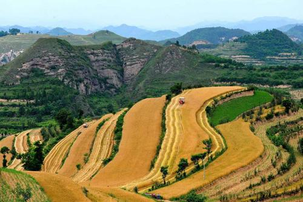
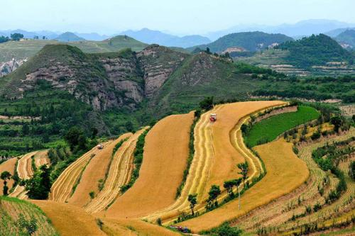

透过数字看丰收 晒晒宝鸡现代农业的“成绩单”
 

你瞧，红彤彤的苹果在枝头笑红了脸；你看，猕猴桃在地头装箱发往全国各地；你听，广大农民笑呵呵地讨论着今年的收成……金秋九月，西府大地到处洋溢着丰收的喜悦，宝鸡市喜气洋洋地精心谋划着庆祝2020年“中国农民丰收节”暨特色农产品展销活动。 这份丰收的喜悦正来自于宝鸡市现代农业的快速发展，在这个丰收时节，让我们透过一组数字来看看宝鸡现代农业的发展成就，共享丰收喜悦。 1. 粮食年生产能力稳定在140万吨左右 全市耕地保有量532.6万亩，其中有效灌溉面积228.9万亩，年种植粮食面积450万亩左右，年生产能力稳定在140万吨左右，是全国重要的商品粮生产基地。近几年，宝鸡市大力发展强筋、富硒和有机等专用小麦，积极开展绿色高质高效试验示范，优质订单小麦生产突破100万亩。 2. 矮砧苹果面积全国最大，猕猴桃产量占全国1/4 果业是宝鸡市的特色优势产业。近年来，宝鸡市抢抓全省“3+X”工程发展机遇，积极推广苹果“千阳模式”“凤翔模式”和猕猴桃绿色标准化建园模式，渭北百万亩苹果产业带和秦岭北麓60万亩猕猴桃产业带基本建成，全市果品面积达到212.5万亩，其中苹果132万亩、猕猴桃62.5万亩。矮砧苹果面积全国最大，猕猴桃占到全省一半、全国1/4，眉县被授予“中国猕猴桃之乡”。全市建成标准化果园167万亩,占总面积79%。引进培育海升、陕果、齐峰等果业龙头企业122个，形成“眉县猕猴桃”“凤翔苹果”区域公用品牌和齐峰、曹儒等一批知名企业品牌，宝鸡苹果和猕猴桃畅销“一带一路”沿线国家。 3.奶畜存栏和产奶量位居全省前列 畜牧业发展势头强劲。全市存栏奶山羊85.2万只，先后从澳大利亚、新西兰等国家引进良种奶山羊6000余只，组建了全省最大的国外良种奶山羊核心群，建成绿能牧业、和氏乳业万只现代化羊场2个，千只示范羊场27个，百只以上奶山羊适度规模场、家庭牧场500余家，拥有全国最大、保存最为完整的莎能奶山羊良种繁育中心；培育引进和氏乳业、小羊妙可等羊乳加工企业9家，羊奶粉年加工能力达到10万吨。